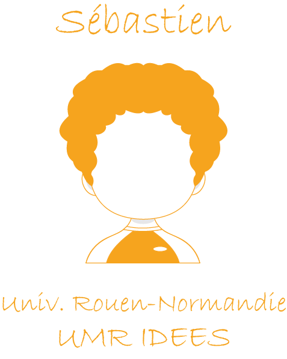

Le notebook
et
la programmation lettrée
et la programmation lettrée
Documenter ses
traitements

Journées annuelles du réseau Mate-SHS, 17 mai 2022
Hugues Pecout (CIST, CNRS) - Timothée Giraud (RIATE, CNRS)Sébastien Rey (IDEES, Université Rouen-Normandie)

Bonjour à tou·te·s
Ingénieurs CNRS en sciences de l’information géographique

- Le langage R comme outil principal
- Production régulière de notebook R
- Responsables du projet Rzine

- Ingénieur de recherche
- Geomatique/Informatique
- Coord. du GT Notebook
- Membre du projet Rzine
Une logique… des pratiques

La mise en forme du texte se fait à l’aide d’un langage de balisage (Markdown, html…)
Anatomie d’un notebook
Simple fichier texte

Notebook sans code ?

Stylo d’Human-Num
Développé par le CRC-EN avec le support Érudit et de la TGIR Huma-Num

Sinon, il existe beaucoup d’éditeurs libres (CodiMD…)
Le Markdown (Gruber, 2004)
Fichier Markdown (.md)
# Mon premier Markdown

## Journées annuelles 2022 :satisfied:
-> Consultez [**le programme**](https://ja-mate2022.sciencesconf.org/resource/page/id/1) !
### A. Interventions pévues
1. *Le notebook et la programmation lettrée*
- Notebook ?
- Historique
- Dernière génération
- Notebook + Git
- Exemple Quarto
3. *Le projet Rzine*
- Le *projet Rzine*
- Le [*site web*](rzine.fr)
- La *collection*
### B. Intervenants
| Nom | Prénom |
| ------ | ----------- |
| Giraud | Timothée |
| Pecout | Hugues |
| Rey | Sébastien |
> Le texte brut balisé en Markdown reste lisible pour l'humain, se stocke dans un simple fichier texte et de nombreux outils libres permettent de l'éditer.-> Visualiser sur HackMD
Texte mis en forme (sortie html)

« Kniter » un .rmd

Les prémices
Ancêtres du notebook :
- 1970 : Scratchpad (Axiom)
- 1987 : MathCad
- 1988 : Mathematica
- 1989 : Maple
- 2011 : IPython

Émergence de la recherche reproductible
En 1976, Jon Claerbout publie l’ouvrage :
Fundamentals of
Geophysical Data Processing
Cette 1ère version, non-reproductible, sera le début d’un long travail de recherche sur la reproductibilité de ses travaux… Via des notebooks.
Émergence du Literate Programming
Le concept de programmation lettrée pensé et mis en oeuvre (1977-78) par Donald Knuth est lié à l’histoire des notebooks.
Multiplication des NB et des plateformes

S. Lau, I. Drosos, J. M. Markel and P. J. Guo, “The Design Space of Computational Notebooks: An Analysis of 60 Systems in Academia and Industry,” 2020 IEEE Symposium on Visual Languages and Human-Centric Computing (VL/HCC), 2020
Dernière génération

2022, l’année


Quarto permet l’utilisation de R, Python, Julia, Javascript (OJS)…
Programmation lettrée & Notebook

Exemple notebook Quarto
+
 +
+
 +
+
 +
+
Merci de votre attention
Diapositives libres (CC BY-SA 4.0)
Slides : https://huguespecout.github.io/notebook_mateshs/#/
Code source : https://github.com/HuguesPecout/notebook_mateshs
Contact
sebastien.rey-coyrehourcq@univ-rouen.fr (GT Notebook)
 @rzine_shs
@rzine_shs